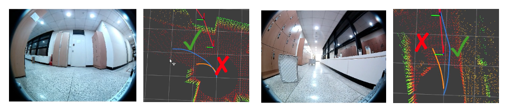
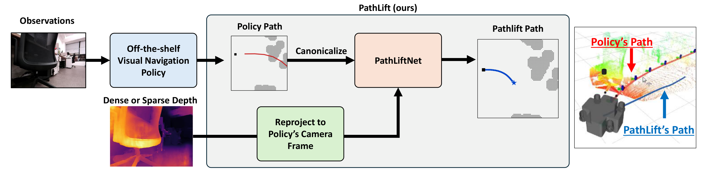

Overview
Generalist visual-navigation policies tell a robot which direction to go but not how far. A separate lifting step is needed at deployment to convert their unitless trajectory into a metric path that a controller can track. Existing scalar lifters apply uniform scaling that misses per-waypoint corrections, while in-policy approaches that inject monocular depth inherit prediction errors near obstacles and at close range.
We present PathLift, a per-waypoint depth-conditioned adapter for pretrained visual-navigation policies. It consumes an explicit, sensor-grade depth source (RGB-D, stereo, or projected LiDAR) and fits per-waypoint magnitude and lateral residuals to a canonicalized prior. PathLift improves closed-loop navigation across visual-navigation policies in simulation and on a real wheeled robot with stereo and LiDAR depth. It produces a depth-feasible metric path in a single feed-forward pass, without test-time optimization.

Method
The adapter receives a canonicalized waypoint sequence and a depth frame projected into the policy camera frame. At each waypoint, it predicts a magnitude and a lateral residual. Training targets are selected from depth-feasible, intent-preserving candidate paths using the expert trajectory. At deployment, the network directly predicts the metric path.

Results
Closed-loop simulation on HM3D
We evaluate 2,000 trials across 50 unseen scenes. The same PathLift adapter is used with all four navigation priors.
| Visual-navigation prior | Prior only SR (%) | With PathLift SR (%) | Relative gain | Adapter (ms) |
|---|---|---|---|---|
| GNM | 17.40 | 25.60 | +47.1% | 5.3 |
| ViNT | 25.00 | 33.70 | +34.8% | 5.2 |
| NoMaD | 17.45 | 29.80 | +70.8% | 5.3 |
| FlowNav | 16.00 | 28.45 | +77.8% | 5.3 |
Success rate and adapter inference time. Latency is measured on an NVIDIA RTX 4090.
Image-goal navigation on a real robot
Across three indoor corridors, stereo-depth PathLift achieves a mean success rate of 86.7%, compared with 48.9% for the fixed-scale baselines. With projected LiDAR, aggregated success is 80.0%.
| Prior | Fixed scale SR (%) | PathLift + stereo SR (%) |
|---|---|---|
| GNM | 46.67 | 86.67 |
| ViNT | 66.67 | 93.33 |
| NoMaD | 33.33 | 80.00 |
15 trials per method across environments E1–E3.
Composition with local planners
On an 800-trial HM3D subset, PathLift followed by MPPI achieves 38.00% success and 34.57% SPL, compared with 34.12% success and 29.11% SPL for MPPI alone.
| Method | SR (%) | SPL (%) | Stage time (ms) |
|---|---|---|---|
| PathLift | 29.62 | 28.20 | 5.6 |
| MPPI | 34.12 | 29.11 | 21.3 |
| PathLift → MPPI | 38.00 | 34.57 | 26.9 |
Acknowledgments
This work was supported by Hyundai Motor Company and Kia, and by the Institute of Information & Communications Technology Planning & Evaluation (IITP) grant funded by the Korea government (MSIT) [No. RS-2021-II211343, Artificial Intelligence Graduate School Program (Seoul National University)].
Reference
Gwanjun Shin, Hyeongseok Suh, Hongmo Jung, and Jongwoo Lim. “PathLift: Depth-Conditioned Metric Lifting for Visual-Navigation Priors.” In Proceedings of the 10th Conference on Robot Learning (CoRL), 2026.